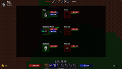
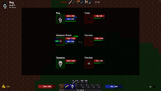
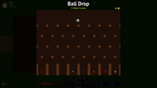
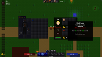
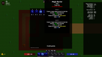
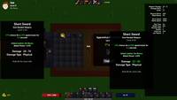
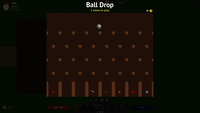
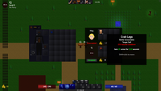
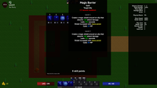
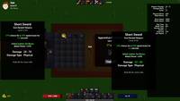

Welcome to choria
Finally, an MMORPG that's all about grinding and doing chores.
Screenshots


 

 








Playing the game
After launching the game, click Play to show the character select screen. To create a character, select an empty slot.
Select a portrait and starting build, which determines your starting gear and skills. All skills can be acquired at some point in the game, so a warrior could later become a mage. Selecting Hardcore will make your character have one life. Not recommended for beginners!
Once your character is created, click Play to enter the world of choria.
How to play
Upon entering the world, you will start in a safe town where you can buy equipment and supplies, learn new skills, change skills levels (respec), trade, gamble and more.

Use arrow keys or the keys ESDF to move your character around. All keys can be remapped in the game options.
Interface
Your current gold amount is shown in the bottom-left of the screen. Gold is used to buy equipment, upgrade gear, and more.
At the bottom of the screen is your belt, skill bar, experience bar, health, mana, and any status effects applied to your character. The text in the corner of the icons represent the hotkeys pressed to activate them.
The top of the screen shows various screens or actions you can activate, the world clock, and pvp zones.
Item drops from monsters will be shown in the bottom right.

Inventory
Pressing C will open your inventory. You can use consumables by right-clicking them. To equip new gear, simply drag it over to an equipment slot, or right-click it. You can delete an item by dragging it outside the window.
In addition to the main inventory, there are two additional hidden screens. Click the key icon near the top left to show keys you've added to your keychain. Click the unlock icon to show your unlocked upgrades.
Most gear will have a set bonus associated with them. Check the armor pieces to see the full bonus when all pieces are equipped. Weapons contribute to the set requirements, but will add their own bonus to the set.
Healing
Most towns have a place to heal or recover mana for free. Simply walk over the healing pool or hit Spacebar repeatedly while standing in it.
Battle
After exploring the town, exit to the world map by traveling left or right on the topmost horizontal road. Once outside, don't travel too far from town, since you'll fight harder monsters. After a random number of steps, you'll enter battle and fight different monsters based on the zone you're in.
Monsters will appear on the right side, while players will be on the left. The green bar underneath your health bar represents your stamina bar. Once the stamina bar is full, you can perform an action like using a skill or item.
If you're playing a warrior, press 1 to select your attack skill, then hit up or down on the keyboard to change targets. Once your target is selected, press 1 again to confirm the action. The result of the action will fly across towards to your target, showing damage done.
Certain starting builds use different attacks, and in some cases will require certain weapon types or mana to use. Make sure to read each skill description to see the requirements.
Items can be used in battle, but only if equipped to your belt. Press the hotkey corresponding to the item when it's your turn, then press the key again to confirm the target. Outside of battle, most items can be freely used. If the item description says Battle Consumable, it can only be used in battle, though its effects can linger afterwards.
If you find yourself low on health, you can return to town to heal for free, north of the spawn point, or use a health potion.
Make sure to keep an eye out for the world clock. When nighttime begins at 10PM, monsters will become 50% harder! However, you will get 50% more experience and gold, so it can be useful to fight certain monsters or bosses at night. If you find it too hard, wait until 6AM for daytime to begin.
Skills
Defeating monsters will grant you gold, experience points (XP), and sometimes items. After getting enough XP, you'll level up, granting more max health and a skill point. Press R to show your skills.
Choose a skill to upgrade, then click the plus icon beneath it. The next level stats will be shown in the description. After a few levels, you'll find that your skills can only go up to level 5. Seek out an enchanter to increase the max level for each skill.
If you want to reallocate your skill points, return to the spawn point in town to allow removing points from skills. Hold Shift to add or remove 5 points at a time.
New skills can be acquired from various vendors or traders. Once the skill is in your inventory, Right-click to learn it.
Vendors
When you've earned enough gold, you can return to a shop to purchase new items. Right-click to purchase an item, or drag it from the vendor to your inventory. Hold Shift to buy five at a time.
Items can be sold back for 50% of its value by Shift+Right-clicking or Shift+Ctrl+Right-clicking to sell five. Whole stacks of items can be dragged over to the vendor screen to sell.
Blacksmiths
Most gear can be upgraded at a blacksmith. Drag over a piece of gear to the empty slot in the window to show the upgrade price and its upgraded stats. Item stats that get upgraded show up in green. All fractional values are rounded down, but can be seen by holding Alt. Items can also be upgraded from the inventory by Ctrl+clicking.
The first blacksmith can only upgrade to level 5, so be sure to seek out more powerful blacksmiths later on.

Set bonuses scale with the lowest level item in the set, so make sure to increase each piece's level together. Hold Alt to show the range of each stat for the bonus.
Traders
In your journey you will come across various traders who seek certain items in return for another. The quantity of each item is shown in the corner and will appear red until the requirements are met.
Bosses
When you're strong enough, you'll delve deep enough in area to reach a powerful boss. Boss battles are difficult, but come with great rewards and usually an important item that can be used at a trader. Bosses respawn after a period of time, but beware: the difficulty and rewards grow with each kill!

Multiplayer
While solo play is fun, choria can also be experienced with (or against) other players over the network. From the main menu, click Join Server to browse a list of local servers, or type in a host by hand. The default port of 31234 will be used if not specified in the host field.
If you have two or more people on a LAN, the easiest way to play together is for one person to start the game by clicking Play from the main menu. This creates a server in the background that allows others to join from the Browse screen. However, if the host player exits the game, all players will be disconnected.
If you want more control, you can start a dedicated server. See the README file for more details. All characters will be saved on the host's computer.
After connecting, you can log into the server with your credentials, or type in a username and password, then click Create to make a new account.
Battles
Once inside the game together, there are a number of ways you can interact with each other. If you're outside town and near each other when one person enters battle, nearby players will be pulled into the same battle. Up to eight players can battle together this way. You won't be pulled in if you have any inventory or skill screens open. Rewards will be split with all surviving players.
If you see an existing battle going on (denoted by the swords icon), press G to join that battle while within one tile away.
The more people in battle, the harder the fight will be. Boss battles will be extra hard with every additional player, so make sure to have a well balanced team!
Status Icons
There are many different icons that can appear on a player to show their status. A player with a status icon over them will not be pulled into battle, however you can still attack them with a PVP skill.


Chat
While in-game, you can message each other by pressing Enter. Everyone on the server will be able to see your message, even if they're on separate maps. Pressing Enter will also show previous messages, including system messages.
Parties
If you want to play alone or with only a select group of people, you can join a private party. Hit P to type in a party name. Anyone else with that party name will be able to see the direction of each other when on the same map. Only players in your party can battle together, although you can still join players that have no party.
Trading
Once you reach level 3, you'll be able trade with other players within 10 levels of you. Hit T and wait for a player to come near you. Once they also hit T, they'll appear in your trade window. You'll be able to exchange gold and items that aren't trade restricted. Once both players hit Accept, the trade window will close and items will be swapped and placed in your inventory if there's room.
If you play as the Beggar, you'll be able to trade at level 1. Spare some change?
PVP
The Hunter starting build has a special skill that allows for PVP. Find a victim standing in a PVP zone, then use the skill to fight them. If you win, you'll get a portion of their gold. However, you will also earn yourself a bounty that will be announced globally on the server. Anyone with the Bounty Hunt skill can attempt to claim your bounty, anywhere in the game, including towns.
Gameplay Tips
- Carry torches! Many caves in the game are too dark otherwise. It's also helpful during night time. The torch timer is paused during battle so they can last a long time.
- Similarly, always carry at least one Teleport Scroll. You can easily return to your spawn point this way if you're low on supplies or too far from town.
- You can use the mouse to target after using an action. Hover your mouse over the target's portrait, then click to confirm the action. This is useful when you need to quickly target a key enemy or heal a particular party member.
- Buying or trading for maps can help you discover areas or secrets. Look for question marks on the map for points of interest.
- Gambling is a good way to pass the night or to earn some quick gold on a lucky drop. Some items can only be found while gambling.
- It's a good idea to write things down, such as trader locations or vendors. Even if you don't need them now, you might later.
- Firebombs are a great battle consumable early on, and can easily kill ghosts. Check the trader at the weapon shop.
- If you find yourself taking too much damage, try using crab legs during battle, or equipping a shield for damage reduction. In most cases getting a few levels or upgrades can make a big impact.
- If you need more room in your inventory, you can place some items in your trade stash. Just remember to take them out before trading with another player.
Glossary
Armor
Increases your physical resist stat, though with diminishing returns.
Attack Damage
Damage done with an attack skill.
Attack Power
Modifies damage of attack skills.
Attack Skill
A skill with a brown background color that deals weapon or shield damage. Most monsters use attack skills.
Battle Speed
Modifies how fast your stamina bar refills in battle.
Belt
The bar at the bottom of the screen used for equipping consumables. The belt can be upgraded to allow for more items.
Bleed Power
Modifies bleeding damage output.
Cold Power
Modifies cold damage output.
Cooldown
A period of time before a skill or item can be used again.
Damage Block
Reduces incoming attack damage by a flat amount before any other reductions.
Difficulty
Modifies the max health and damage of monsters. Also increases gold and XP given.
Evasion
Chance to completely ignore attacks.
Fatigue
Battle speed reduction that occurs after using certain skills.
Fire Power
Modifies fire damage output and torch duration.
Heal Power
Modifies the strength of your healing potions, healing spells, health regen, or certain procs.
Hit Chance
Determines the chance to hit a target with an attack skill.
Initiative
The bonus to starting stamina in battle.
Lightning Power
Modifies lightning damage output.
Mana Power
Modifies the strength of your mana potions, certain spells like Magic Barrier, mana regen, or certain procs.
Mana Shield
Converts a portion of the damage you take to mana damage.
Move Speed
Modifies the movement speed of your character.
Passive Skill
A skill with a gray background color that must be equipped to the skill bar to have any effect.
Pet Power
Modifies the stats of summons.
Physical Power
Modifies physical damage output.
Pierce
Extra damage added to attacks that ignores armor and damage block.
Poison Power
Modifies poison damage output.
Proc
An effect that is triggered randomly when an action is used.
Resist
Reduces incoming damage for a particular damage type. Stun resist reduces stun and slow duration.
Skill Bar
The bar at the bottom of the screen that holds active or passive skills. Can be upgraded to hold a total of 8 skills.
Slowed
An effect that reduces battle speed and move speed.
Spell
A skill with a blue background color that has a mana cost.
Spell Damage
Modifies damage output of spells.
Stamina Bar
The green bar in battle that lets you perform an action when full.
Stunned
An effect that reduces battle speed to 5% for a period of time.
XP
Experience points.